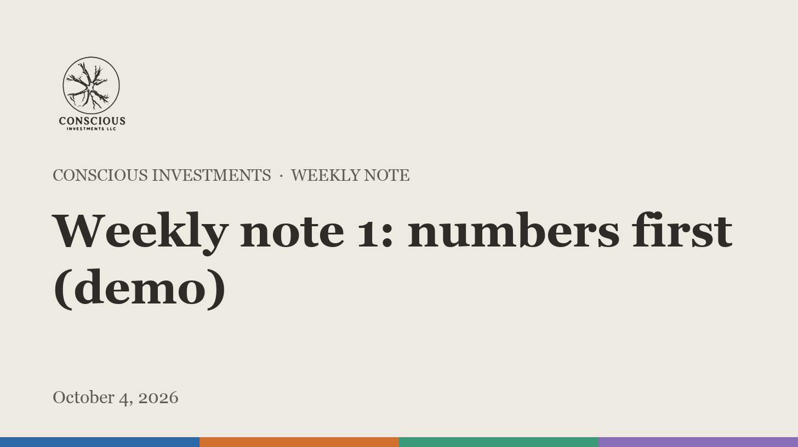

Weekly note 1: numbers first (demo)
October 4, 2026
The idea: let the numbers go first
Most stock ideas start with a story and go looking for numbers. We work the other way round. Every week the screen reads the filings of the whole US market and asks one narrow question: where is growth speeding up while margins widen, before the share price has fully noticed? That is the pattern that showed up early in names like Eos Energy and Rambus, and it is rarer than it sounds. Most weeks only a handful of companies pass, and most of those fall away once we read them closely.
Reading closely is the part that takes time. A jump in revenue can be one large order that never repeats. A margin can widen because a company stopped investing. A share price can move because a commodity did. Each name that survives gets a one-page pitch that says plainly why it screened, what would have to be true for the growth to last, and what could go wrong. For companies that still lose money, we add how many years of cash they have left.
What a pitch never contains is a valuation. Putting a number on a company is the Quant team's job, and it happens only after a name goes to full research. Until a model has been built, checked and approved, we do not publish a target or a rating for anything. That rule costs us some excitement. It also means that when a number does appear in this letter, it is one we are prepared to be held to.
What we're watching
These are ideas, not recommendations, and none has a valuation yet.
- SENS: Revenue growth from 87% to 118% YoY, margin +12.2 pts vs a year ago (demo dry run). Since we flagged it on 2026-10-04: +0.0%, or +0.0% against the S&P 500.
- ETON: Revenue growth from 40% to 99% YoY, margin +4.6 pts vs a year ago (demo dry run). Since we flagged it on 2026-10-04: +0.0%, or +0.0% against the S&P 500.
What happens next
Names stay on the watchlist until one earns a full research assignment. When that happens you will read the thesis here first, then the model's numbers once they are approved, with the bear case given the same room as the bull case. We track every idea from the day it was flagged against the S&P 500, including the ones that go nowhere, and we will show that record here in full once the paper portfolio opens. If an idea stops working, we will say so in this letter rather than let it quietly drop off the list.
Conscious Investments is an independent equity research imprint authored by Ethan Stott. It is not a registered investment adviser or broker-dealer. This note is for information and education only and is not investment advice, an offer to sell, or a solicitation to buy any security. Price targets and ratings reflect the author's judgment as of the date above, may change without notice and may not be realized. Past performance is not indicative of future results. Portions of this note were drafted with AI tools and reviewed by the author. Holdings disclosure: The author holds no position in the securities discussed. The Conscious Investments model portfolio is a paper portfolio.